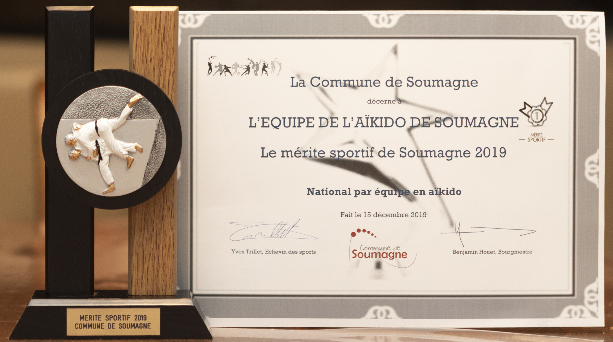
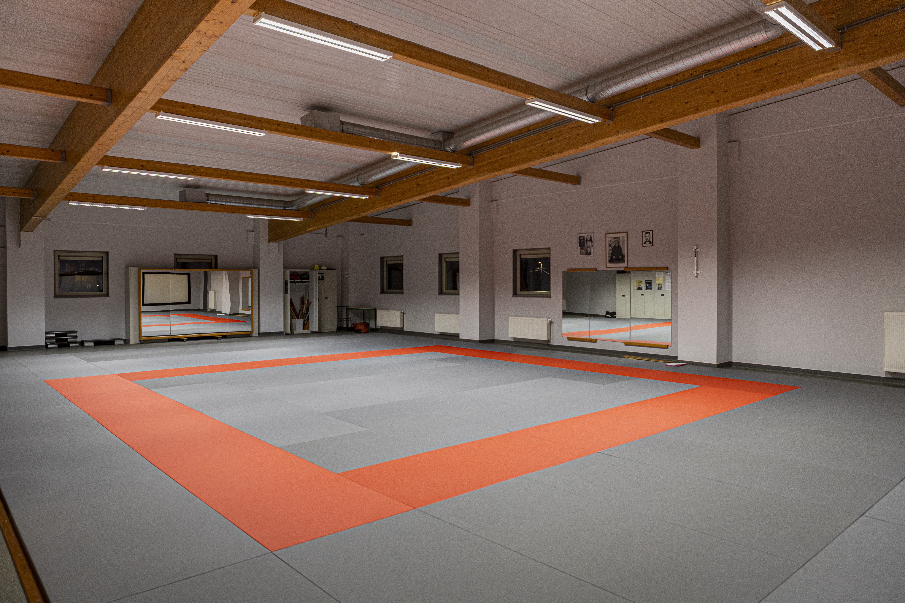

L’histoire du dojo
Fondé en 1974, l’Aïkikaï de Soumagne est aujourd’hui une référence locale dans la pratique de l’aïkido. Le dojo a été créé par notre professeur actuel M. François Warlet, 7e dan Shihan diplômé de l’Aïkikaï de Tokyo, moniteur ADEPS et membre du Comité Supérieur de l’Association Francophone d’Aïkido.
À ses débuts, le club a vu le jour au sein du Foyer Culturel de Soumagne-bas, rue A. Dufuisseaux. Dès les premiers cours, l’engouement était au rendez-vous, avec une trentaine de pratiquants inscrits.
Malgré cet enthousiasme initial, le dojo a connu une période plus difficile quelques années plus tard, avec une diminution significative du nombre de pratiquants. Face à cette situation, les membres les plus engagés ont fait preuve de détermination pour assurer la continuité du club.


Une solution fut trouvée grâce au transfert des activités vers l’Athénée Royal de Soumagne, un lieu plus central et plus accessible. Ce changement a permis de relancer la dynamique du club, avec une augmentation progressive du nombre de pratiquants et la création d’une section dédiée aux enfants.
Malgré des conditions parfois rudimentaires, l’esprit du dojo et la convivialité ont toujours été au cœur de la pratique. En 1981, suite à des travaux de modernisation du site, le club a dû une nouvelle fois se réorganiser.
Après concertation, le dojo s’est installé dans les locaux du Foyer Culturel de Micheroux, où il poursuit encore aujourd’hui ses activités.
Au fil des années, l’engagement et la persévérance de ses membres ont été reconnus, notamment par l’attribution du Mérite Sportif Soumagnard en 1993, à l’occasion du 20e anniversaire du club, ainsi qu’une nouvelle distinction en 1999 pour ses 25 ans d’existence.
1974 – 2024 : 50 ans de passion et de transmission.
Depuis un demi-siècle, le dojo perpétue les valeurs de l’aïkido avec la même exigence, la même rigueur
et le
même enthousiasme.
Depuis l’ouverture du Centre Sportif de Soumagne en 2005, le club bénéficie d’un véritable dojo offrant un cadre optimal pour la pratique, tant pour les enfants que pour les adultes.
Aujourd’hui, grâce à l’implication et à l’expertise de ses enseignants, l’Aïkikaï de Soumagne continue de transmettre son art avec passion, exigence et respect des valeurs traditionnelles.